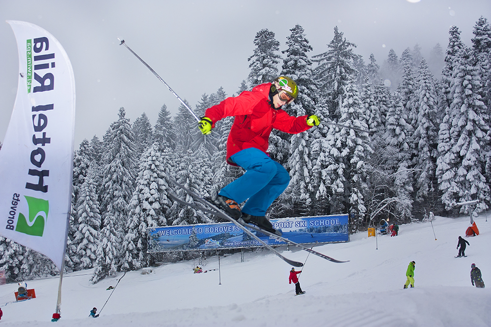

Balkan Powder

You know, initially this was just supposed to be a short lil thing on skiing in Bulgaria. But turns out the whole country started to interest me as I did a bit more research. Something I've noticed is that Uber drivers in Chicago tend to be more nice and conversational than the ones in New York. This one Uber driver I had was Bulgarian, and was going on and on about Bulgarian history. He said Prague was his favorite city. Wish I remembered the dude's name. Should write a page on that one later.
The first time I heard about the Surva festival was through the works of Charles Fréger. His photography style is super captivating. There is minimal shadowing in his work, and the colors seem almost washed out - giving the whole look an otherworldly feel. The subjects are portrayed with such a commanding and almost intimidating presence, caught dead center in the composition. Anyways, one of the more furrier looking costumes were traditional costumes from the Bulgarian Surva festival. My friend had a copy of one of his books. It served the purpose of a coffee table book. Almost decorative. And I would flip through the pages as I waited for him to get ready.
Fun facts
- Bulgaria offers some of the most affordable skiing in Europe, per a random Brit's recommendation when in Chamonix.
- On November 5th, 2023, Bulgaria witnessed a dominantly red-colored Aurora borealis for the first time. It shocked everyone given that the country is normally too south from the viewing region.
- Bulgaria, even though heavily influenced by, never was officially part of the Soviet Union.
- шарена сол is signature of Bulgarian cuisine. It's a spice mix, with salt, paprika, fenugreek leaves, and thyme. I think.
Things to do
- Popular ski resorts include Bansko, Borovets, and Pamporovo. The former two are 1-3 hours south of Sofia, and the latter is the farthest, 4 hours SE of Sofia.
- The Pirin and Rila Mountains provide stunning backdrops for skiing adventures.
- Explore the charm of Bansko's old town or take a scenic hike in the Pirin National Park.
Other things to know
- Some Bulgarian delicacies include: banitsa (cheese-filled pastry), kapama (slow-cooked meat and vegetables), and rakia (fruit brandy).
- Be prepared to face "rude" customer service. A good server is one that never comes to you unless you've called them.
- Not the nicest trains the world has seen. Probably should rent a car if outside the city, but not necessary if just staying in Sofia.

Where is everything my guy
If you're based in Sofia, you can easily access major ski resorts in Bulgaria:
- Bansko: Take a bus or drive 160 km south of Sofia to reach Bansko. Approx 2-3 hours.
- Borovets: Borovets is located 70 km south of Sofia. Approx 1-2 hours.
- Pamporovo: Pamporovo is situated in the southern Rhodope Mountains, approximately 250 kilometers southeast of Sofia. The journey by bus or car takes around 3-4 hours.
Other attractions:
- Surva Festival: The Surva Festival is held annually in late January in Pernik, about 30 km west of Sofia. It features vibrant parades, music, and traditional mask performances.
- Rila Monastery: The largest Orthodox church in the country. The paintings look beautiful, and seems like you can spend the night for cheap. Again, about 2 hours south of Sofia.
- 7 Rila Lakes: From Wikipedia,
- "Each lake carries a name associated with its most characteristic feature. The highest one is called Salzata ("The Tear") due to its clear waters that allow visibility in depth. The next one in height carries the name Okoto ("The Eye") after its almost perfectly oval form. Okoto is the deepest cirque lake in Bulgaria, with a depth of 37.5 m. Babreka ("The Kidney") is the lake with the steepest shores of the entire group. Bliznaka ("The Twin") is the largest one by area. Trilistnika ("The Trefoil") has an irregular shape and low shores. The shallowest lake is Ribnoto Ezero ("The Fish Lake") and the lowest one is Dolnoto Ezero ("The Lower Lake"), where the waters that flow out of the other lakes are gathered to form the Dzherman River."
- Buzludzha Monument: The monument house of the Bulgarian Communist Party.
- Belogradchik: Cool fortress looking thang.
Useful phrases in Bulgarian
- Hello - Здравей (Zdravey)
- Thank you - Благодаря (Blagodarya)
- Excuse me - Извинете (Izvinete)
- Do you speak English? - Говорите ли английски? (Govorite li angliyski?)
- While we're here, Bulgarians shake their heads for yes and nod for no.
Russian vs Bulgarian
Even though from the alphabet it may seem like Bulgarian and Russian are quite similar, grammatically they are quite different from each other. You are better off trying to communicate in English instead of using Russian. If you care to know, Bulgarian is most similar to Serbo-Croatian.